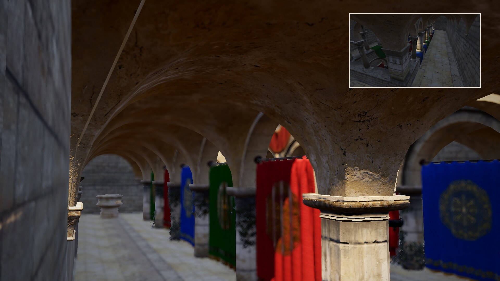

LENS: physical lens, depth of field and EXR
A LENS camera now drives exposure and depth of field from its lens: focal length, aperture, shutter, ISO and focus distance. Spline rails, noise shake and HDR frame recording to EXR were added.


CameraLensComponent gained driveExposure and driveDepthOfField. CameraPostFxPool turns the lens into EV100 and PRISMA manual exposure, and uses thin-lens formulas for the near and far sharp limits, which it passes to PRISMA depth of field per camera. Global PRISMA settings are left alone.
Rails use centripetal Catmull-Rom with constant speed along the arc and eased start and stop; shake is seeded deterministic noise with a fade. The old linear rails and sine shake behave as before. CameraHdrFrameRecorder writes linear RGBA16F frames to OpenEXR and refuses an 8-bit result.
The frame was rendered by tools/site/lens_showcase.cpp: the main camera with a 35 mm f/1.4 lens focused at 4 m on the red curtain, and a second camera of the same scene in the inset through CameraCompositor.
- Verified
- Rendered on a Mac (Metal), 1920×1080, Sponza (Khronos glTF Sample). The host prints the actual PRISMA state: EV +1.24, DoF on, focus 4.08 m, sharp range 1.11 m, blur 5 px; a frame without DoF was rendered separately for comparison. Unit tests for the lens, rails and EXR (camera_lens_physics, camera_rail_path, camera_exr) and the aiverse_tests cases passed on Linux (GCC). Before the merge into main the whole branch was built on a Mac: 365 of 367 tests passed; the two failures (skill_audit, rts_authored_pose_test) also fail on plain main.
- Limitations
- HDR capture via readTextureAsync RGBA16F exists only on Metal; OpenGL can only record 8-bit. Cubemaps, panoramas, mirrors, portals and stereo are not done. Exposure is relative to the default lens, not photometric.